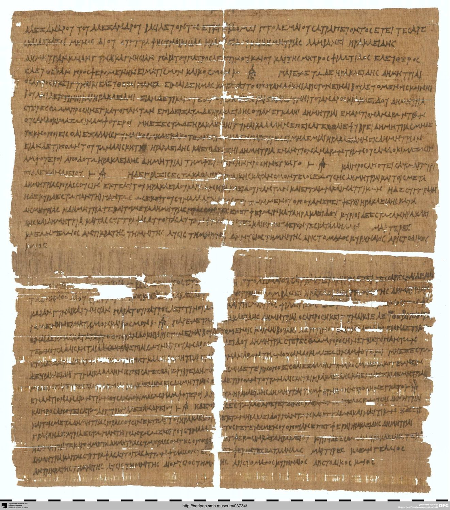

Unit 7 · Women in ancient Greece · Lesson 13
Papyri and property
Greek women in the Ptolemaic economy and law. What do a loan, two petitions and a will show women doing, and how far did their position change from Classical Athens?
Year 11 Ancient History · Present with → or space · Read on a phone with R

Images: SMB, Ägyptisches Museum und Papyrussammlung (CC BY-SA 4.0). Full details on the last slide.
Review · books closed · 6 minutes · press K for the timer
Five questions from Lessons 10–12
- When was P. Eleph. 1 written, and why do we give two years? 311/310 BCE. Hunt and Edgar date it to 311; the Heidelberg papyrus database and the Berlin museum give 310 (17 July – 15 August), so we give both.
- What did P. Eleph. 1 put in writing about the dowry that an Athenian spoken pledge (the engyē) left unwritten? Its value, “clothing and ornaments to the value of 1000 drachmas”, and its return, with a further 1000 drachmas forfeit, if Heracleides breaks any of his promises (another wife, children by another woman, harm to Demetria). Lesson 6 has a speaker describing a law that returns a dowry, but no Athenian marriage contract.
- Who judges a dispute under P. Eleph. 1? “three men whom they both accept”: Heracleides must prove whatever he alleges against Demetria before them, and Demetria must prove his wrongdoing before them.
- Why do papyrus documents about Greek women survive from Egypt? Papyrus survives in Egypt’s dry climate; nearly all papyri are found in the Egyptian desert, and very little survives anywhere else.
- Writing · fix this dropped quotation: Pericles 24.1. “Aspasia had great power.” Plutarch, a Greek biographer writing about 100–120 CE, raises “the query what great art or power this woman had” (Pericles 24.1), prompted by a report (“it is thought”) that Pericles attacked Samos “to gratify Aspasia”, which suggests that her influence was taken for granted by his time and he set out to explain it. The original has no writer, date, signal verb or interpretation, and “Aspasia had great power” is not Plutarch’s wording: he asks a question about her “art or power”, and his hedge, “it is thought”, belongs to the report about Samos.
Mark your own answers in a different colour. Which question did you find hardest?
Learning intentions and success criteria · 2 minutes
Today’s goals
- analyse the economic and legal roles of Greek women in Ptolemaic Egypt
- judge the degree of continuity and change from Classical Athens
- describe what loans, petitions and wills show women doing
- explain what continued (the kyrios) and what changed
- write a comparison that judges the degree of change
Syllabus outcomes: AH-11-02 proposes ideas about the varying causes and effects of events and developments · AH-11-05 analyses different types of sources for evidence to support a historical account or argument · AH-11-07 communicates historical understanding, applying historical knowledge, terms and concepts. Life Skills: AH-LS-04 recognises causes and effects of events or developments · AH-LS-11 communicates information about the past using historical terms and concepts.
Note-making · the routine for the whole course
How to structure your notes
questions and key terms, written after
short phrases, arrows (→ leads to), abbreviations (c. = about; BCE = Before the Common Era)
- 1A new page for each lessonA cue column about a quarter of the page wide; title and date at the top; room for a summary at the bottom.
- 2Listen and look, then writeDon’t copy while a slide is being explained. Phrases, not sentences; a name and a date for every document.
- 3Write your own notes at each ✎ checkpointThen compare with the model notes, one row at a time. Add what you missed in a second colour.
- 4Write the cue questions afterwardsUse exam verbs: identify, describe, explain, analyse. To revise, cover your notes and answer the cues.
- 5Finish with a three-sentence summaryTwo checkpoints today: the loan and Apollonia · the documents, after you write. Your 8-mark answer goes in your answer booklet, not your notes.
Key vocabulary · add to the unit word wall
Words for the documents and for degree
| Writing terms | Meaning |
|---|---|
| To what extent | Not a glossary word: NESA calls it a self-explanatory term. It asks for a judgement of degree (largely, partly, only for a few), argued with evidence. |
| Judgement of degree | entirely · largely · to a significant extent · partly · only to a limited extent · not at all |
| Added today | Meaning |
| Continuity and change | Analysing the extent and nature of continuity and change over time: what stayed the same, what did not, and how far. |
| Content terms | Meaning |
|---|---|
| Kyrios | A woman’s legal guardian — her father, then her husband — who acted for her in law. In Egypt the Greek word for a guardian is still kyrios. |
| Engyē | The spoken pledge by which a kyrios gave a bride in marriage. |
| Demotic | The everyday Egyptian script, used for Egyptian-law contracts. |
| Added today | Meaning |
| Petition (enteuxis) | A written request to the king for justice or help. |
| Will | A document in which a person says who is to have their property after they die. |
From Lessons 6 and 12, still in use: dowry, papyrus, This Does That, drachma.
1 · I do · think aloud on the loan · a Greek document
Demetria lends 400 drachmas
… at the village of Takona in the Oxyrhynchite nome. Demetria daughter of Apollodotus, Cyrenaean, with her guardian Apollophanes son of Apollodotus, Cyrenaean of the Epigone, has lent to Apollonius son of Patron, Cyrenaean of the Epigone, 400 drachmas in copper money produced to view, bearing interest at the rate of 2 drachmas the mina each month, but in place of the interest on this loan Apollonius has leased to Demetria his tower inherited from his father in the village of Takona … If he fails to guarantee as stated, Apollonius shall forfeit to Demetria this loan of 400 drachmas increased by one half … and Demetria shall have the right of execution in accordance with the ordinance …
A loan with partial antichresis, written in Greek at the village of Takona, Oxyrhynchite nome, Egypt, 221–220 BCE · trans. A. S. Hunt and C. C. Edgar, Select Papyri I (Loeb, 1932), no. 65
Words: guardian the kyrios who acts with her · Cyrenaean a label for a settler’s home city · antichresis the lender uses the borrower’s property in place of interest · right of execution the right to enforce payment under the law · copper money drachmas reckoned in copper
- 1Who is named firstDemetria, the lender. Her guardian Apollophanes is named with her. A Greek settler, “Cyrenaean”, in an Egyptian village.
- 2What she doesLends 400 drachmas, and takes a lease on a tower in place of interest. If the borrower fails to guarantee the use of the tower, he forfeits the loan increased by one half, and she has the right of execution.
- 3Who acts with herA guardian, named beside her. The document does not say what Apollophanes did.
- 4A limitOne loan, one woman, one village. It shows what was written down, not how many women lent money.
1 · I do · think aloud on Apollonia · Greek and Egyptian-law (demotic) documents
One woman, two legal systems
| Law | Her loan (Vandorpe’s numbers) | Guardian named |
|---|---|---|
| Demotic | nos. 13 and 14, 179–133 BCE | none |
| Greek | no. 16, 4 Jan 131 BCE | Dryton, her husband |
| Greek | no. 17, 14 May 129 BCE | Dryton |
| Demotic | no. 18, 15 Mar 128 BCE | none |
| Greek | no. 19, 7 Nov 127 BCE | Dryton |
| Greek | a fragment, about 136–124 BCE | none noted |
| Greek | Feb–Mar 124 BCE (Dryton dead) | Semtheus, son of Totoes |
Source: Katelijn Vandorpe, “Archive of Dryton, Apollonia and Descendants”, Trismegistos Archives (2011): her list of Apollonia’s loans. Demotic loans are Egyptian-law documents; Greek loans are Greek-law documents. She is Senmonthis in Vandorpe and Semmonthis in Dryton’s will (Card D).
Images: Rémih (CC BY-SA 3.0). Full details on the last slide.
- 1One womanApollonia, also called Senmonthis, wife of the Cretan officer Dryton, at Pathyris (now Gebelein), about 150–126 BCE.
- 2Two kinds of loanGreek loans, 131–127 BCE: her husband Dryton is named as her guardian; a fourth Greek loan survives only as a fragment, with none noted. Demotic loans: the list names none. After Dryton died, a Greek loan names another guardian.
- 3Why the differenceBagnall: a person “might operate under one legal system in one transaction, a different one in another, depending on the nationality of the parties, the language used, and the place where litigation took place”. Under Egyptian law, married women could lend money “without the need of the husband’s approval”.
- 4What it reveals about being GreekVandorpe: she came from an Egyptian family “promoted to the class of the Greeks” and “presented herself to society as a Greek woman in every respect”. This suggests that being Greek in law was partly something a woman could present herself as.
Notes checkpoint 1 of 2
A loan, and one woman with two systems
2 · We do · in pairs · 7 minutes with the continuity-and-change grid · Greek documents
Three more documents: two petitions and a will
To King Ptolemy greeting from Philista daughter of Lysias resident in Tricomia. I am wronged by Petechon. … not to suffer me, who am a working woman, to be thus lawlessly treated, but to order Diophanes the strategos to write to Simon the epistates and Nechthosiris the policeman …
A Greek petition to King Ptolemy about a scalding at the village baths, about 221 BCE · trans. A. S. Hunt and C. C. Edgar, Select Papyri II (Loeb, 1934), no. 269 = P. Enteux. 82
… I have no relative who can serve as my guardian. Therefore, to prevent this causing harm to the property left to me by my husband, if I lack a guardian through whom I can perform the necessary actions, I beg you, O king, to order Diophanes the strategos to appoint as my guardian Demetrios, a Thracian …
A Greek petition to King Ptolemy by Nikaia daughter of Nikias, a widow, January 218 BCE · attalus.org’s own English translation (no translator named) · P. Enteux. 22
… to my wife Apollonia also called Semmonthis, if she stays at home living irreproachably, they shall give every month for 4 years, for the maintenance of herself and for her 2 daughters … Whatever property Semmonthis may have manifestly acquired for herself while living with Dryton, she shall continue to own …
The Greek will of Dryton, a Cretan cavalry officer, at Pathyris, 126 BCE · trans. Hunt and Edgar, Select Papyri I (Loeb, 1932), no. 83 · “they” are his heirs, his son and daughters
Words: petition a written request to the king · strategos a governor of a district · epistates a local official · guardian the kyrios who acts for her · irreproachably without fault. Card A is the loan (Select Papyri I 65).
Pairs: for each card, what is the woman doing, who acts with her, and is it a Greek document?
2 · We do · in pairs · complete the grid from the cards and from Lessons 6 and 7 · then a cold call
Athens and Egypt, topic by topic
| Topic | Athens (Lessons 6–7) | Ptolemaic Egypt (the cards) | Continuity or change? | Evidence |
|---|---|---|---|---|
| Who acts for her in law? | ||||
| Lending and contracting | ||||
| Going to the authorities | ||||
| Property | ||||
| Paid work |
Cold call: did the law change, or only the records?
- A rule kept apart from a record: what a law says, and what a document shows someone doing.
- Evidence from both settings, each with its source.
- A limit: one document is one woman; Isaeus 10.10 is one litigant’s account.
- A degree, not yes or no.
Acts for her: her kyrios, her father, then her husband; “on the woman’s behalf her guardian may sue” ([Demosthenes] 59.52, a speaker describing a law).
Contracting: “contract for the disposal of more than a bushel of barley” was forbidden to “any child—or woman” (Isaeus 10.10): the law as one litigant states it; we have it only from him.
Property: a husband who sent his wife away “must pay back the marriage portion” (59.52); an epikleros, the daughter of a man who died leaving no son, was married to a close male relative to keep the property in the family (Lesson 6).
Paid work: a widow weaving garlands to sell (Aristophanes, a comedy); Euxitheus says “many women have become nurses and labourers at the loom or in the vineyards” (Demosthenes 57.45); Phanostrate, “Midwife (maia) and doctor (iatros)” (her stele; status uncertain).
3 · Writing focus · 6 minutes · I do → We do → apply
Writing focus: judge the degree first, then compare
Open a continuity-and-change comparison with a judgement of degree. Then go point by point (whereas … · both …) and end at the same degree.
Worked example, written for this lesson, on marriage, not on today’s 8-mark question: To what extent did the way a marriage was made change from Classical Athens to Ptolemaic Egypt?
The way a marriage was made changed largely in form, not in who decided. Whereas an Athenian bride was given by her kyrios through a spoken pledge (the engyē), Demetria was given “from her father Leptines, Coan, and her mother Philotis” in a written contract of 311/310 BCE that set out duties for both husband and wife; in both, however, the arrangements were between the bride’s family and the groom, so the change was largely one of form rather than of who decided.
Judge · a degree first
Whereas · evidence quoted exactly
Both · what stayed the same
Resolve · the same degree
Open your answer with one sentence: your degree and your main reason, before any evidence. Don’t copy the marriage model.
“… [degree word] …, because …”
Your Writing toolkit (booklet pages 3–4): judgement of degree.
The model’s Judge says largely. Move it one notch on the scale and be ready to defend it. Vote on “3, 2, 1, show”.
- entirely
- largely
- to a significant extent
- partly
- only to a limited extent
- not at all
- Thumb upone notch up: entirely
- Thumb downone notch down: to a significant extent
Up, entirely: show that the written duties, the penalty and the three men are only a new form for the same family-controlled arrangement. Down, to a significant extent: find a change in who decided (Demetria’s mother is named with her father; Lesson 6’s law names a father, brother or grandfather). Either is defensible with evidence and its limit: one couple.
3 · You do · 19 minutes in all · deconstruct and check first (3 minutes)
An 8-mark comparison: deconstruct it first
To what extent did the economic role of Greek women change from Classical Athens to Ptolemaic Egypt? 8 marks
Deconstruct it: what does this question ask you to do?
| Step | This question |
|---|---|
| Verb | To what extent: not a word in NESA’s glossary, but a self-explanatory question. It asks for a judgement of degree, and it asks for what assess asks for (department advice): NESA, ‘Make a judgement of value, quality, outcomes, results or size.’ So: how far, with a degree word. |
| Topic | the economic role of Greek women: what they did with money, property and work, and the legal rules that shaped it, not their lives in general |
| Limits | Greek women, from Classical Athens (Lessons 6–7) to Ptolemaic Egypt (today’s documents); evidence you have seen; Egyptian-law evidence only where it concerns a Greek woman |
| Do | 8 marks: a developed paragraph with a judgement (department advice). Open with a degree and your main reason; compare Athens and Egypt point by point (whereas, both) with evidence and its source; weigh what continued against what changed; end at the same degree |
Check first: what must your first sentence do?
State how far it changed, with a degree word and a reason: not yes or no, and not a list of what you will cover. The evidence comes after.
3 · You do · timed 12 minutes · press K, click 12 and start · your grid and cards are open
Write your 8-mark answer
To what extent did the economic role of Greek women change from Classical Athens to Ptolemaic Egypt? 8 marks
- Open with your Judge: a degree word and your main reason (the first 2 minutes).
- Compare Athens and Egypt point by point (whereas, both), each point with evidence and its source.
- Weigh what continued against what changed, then end at the same degree.
Bagnall sees “a range of possibilities for legal activity for women impossible to imagine in the classical Greek city” (in Rowlandson 1998, p. 164): assess whether the papyri show more freedom or simply more records. His “all cases” are documents he has just listed (a woman acting as guardian of a child, a woman giving herself in marriage, a divorce by mutual consent, two women settling a husband’s estate), not today’s loan, petitions and will.
Use your grid (and the Athens support card). Word bank:
Frames (form only): “Whereas in Athens …, in Ptolemaic Egypt …; both …, so the change was …” · “However, one document cannot show …”
3 · You do · 4 minutes · after the timer · check your own answer
Check your answer against what a strong answer includes
Read your answer through with a different-coloured pen. Circle your degree word in the first sentence and in the last: are they the same? Tick each point you can find, then add one missing point in the margin.
Cold call: which degree word did you open with, and does your last sentence match it?
- A degree in the first sentence, with a reason, not yes or no.
- Evidence from both settings, each with its source: a rule kept apart from a record.
- A point-by-point comparison: whereas, both.
- Continuity and change both weighed, not one listed.
- A hedge matched to the evidence: one document is one woman; Isaeus 10.10 is one litigant’s account.
- The same degree in the last sentence.
Check · 4 minutes · pens down · vote with your thumb on “3, 2, 1, show”
How far did the economic role of Greek women change?
- Thumb upLargely changed
- SidewaysPartly changed
- Thumb downBarely changed (only to a limited extent)
Cold call one student from each camp: which evidence would you put first, and what is its limit?
- Largely: a named change in what women did or could do, not just more records, with its source.
- Partly: a named change and a named continuity, side by side, and why the balance falls where it does.
- Barely (only to a limited extent): that what looks new is the record, and that the rule (the guardian) continues; and what evidence would show a change.
- Any camp can be right if it names its evidence and its limit.
Check · exit ticket · 4 minutes · one sentence · collected
Exit ticket: your Judge and one piece of evidence
Write your Judge on the economic change in one sentence, with a degree word, and then one piece of evidence: name the document and quote a few of its words exactly.
Hand it in with your answer. Then tick the “I can” statements you can do, and circle the one you are least sure of (1 minute).
- A degree word from the scale: entirely · largely · to a significant extent · partly · only to a limited extent · not at all.
- A document named exactly, with a few of its words: for example Demetria named as the lender, “with her guardian Apollophanes”.
- Or Philista, who calls herself “a working woman”, in a petition to the king.
- Or Isaeus 10.10, the law as one litigant states it.
After you write · one historian, set beside your own Judge If time · or at home
What does Bagnall say, and how far does it reach?
The most obvious element of continuity is the use of the Greek language. Another is the requirement that Greek women have legal guardians, kyrioi in Greek …
The earliest Greek marriage contract (indeed, the first dated Greek document) surviving from Ptolemaic Egypt (123) is full of legal language redolent of fourth-century Athenian usage and embodies the normal family-controlled, male-operated marriage system known for the classical period.
But such continuity of practice did not last very long.
But in all cases the colonial setting has witnessed the opening up of a range of possibilities for legal activity for women impossible to imagine in the classical Greek city.
Roger S. Bagnall, in Jane Rowlandson (ed.), Women and Society in Greek and Roman Egypt: A Sourcebook (Cambridge University Press, 1998), pp. 163–164 · his own words; one historian’s view
Words: kyrioi more than one kyrios · colonial setting the Greeks’ settlements in Egypt
Set Bagnall beside your own Judge: what does he name as continuity, what does he say did not last, and how far does his evidence reach?
He names the Greek language and the guardian (kyrioi) as elements of continuity. “Such continuity of practice did not last very long” follows his sentence on the earliest marriage contract (P. Eleph. 1), and his evidence for it is documents he has just listed: a woman acting as guardian of a child, a woman giving herself in marriage, a no-fault divorce by mutual consent, and two women settling what followed a husband’s death. He does not say the guardian requirement ended: on the next page he says Greeks in Egypt “adhered to” it “strongly”. His “in all cases” refers to those documents, not the loan, petitions or will on your cards, and his subject is legal activity across Greek and Egyptian practice, not only the economy.
Notes checkpoint 2 of 2 · after you write If time · or at home
Loans, petitions and a will: what they show, and what they do not
Finish your notes If time · or at home
Summary: three sentences
- What do a loan, petitions and a will show Greek women in Egypt doing?
- What did you judge continued and what changed, and how far? (your own degree)
- What can these documents not show?
Greek papyri from Ptolemaic Egypt show women as named lenders, as petitioners writing to the king, and as people provided for in a will, and Apollonia’s loans show one woman using both a Greek and an Egyptian-law form. How far the economic role changed from Athens is a judgement for each writer to make with a degree word and evidence. A single loan, petition or will cannot show how every Greek woman lived, and a will records only a husband’s wishes.
Practice and review · 1 of 3 · true, false, justify
True or false? Justify your answer
- 1In Select Papyri I 65, Demetria is the lender. True — “Demetria daughter of Apollodotus, Cyrenaean, with her guardian Apollophanes son of Apollodotus, Cyrenaean of the Epigone, has lent” 400 drachmas.
- 2Every loan of Apollonia’s in Vandorpe’s list names her husband as her guardian. False — the Greek loans of 131–127 BCE name Dryton; the list names no guardian on the demotic loans (Egyptian law) or on one Greek fragment; and a Greek loan of 124 BCE, after Dryton’s death, names Semtheus, son of Totoes.
- 3Philista’s petition proves that Greek women in Egypt no longer needed a guardian. False — the translation names no guardian for her, but one petition cannot show what was usual, and Nikaia’s petition asks the king to appoint a guardian for her.
- 4Dryton’s will lets his wife keep property she had acquired. True — “Whatever property Semmonthis may have manifestly acquired for herself while living with Dryton, she shall continue to own”. But it is a husband’s will, and her maintenance depends on her staying at home “living irreproachably”.
- 5Bagnall says Greek women in Egypt were free of the legal disabilities found in much of the Greek world. False — he says that of Egyptian women (p. 156). Of Greek women he names “the requirement that Greek women have legal guardians” as an element of continuity (p. 163).
- 6One loan shows how most Greek women in Egypt handled money. False — it is one woman’s loan in one village; a historian needs many more documents to say what was usual.
Practice and review · 2 of 3 · identify, This Does That, assess
Three exercises
Identify who acts with Demetria in Select Papyri I 65. (1 mark)
Her guardian, Apollophanes son of Apollodotus.
Write one This Does That sentence about this clause of Dryton’s will: “… to my wife Apollonia also called Semmonthis, if she stays at home living irreproachably, they shall give every month for 4 years, for the maintenance of herself and for her 2 daughters …”
The clause that gives Dryton’s wife maintenance “if she stays at home living irreproachably” attaches a condition to her support, which suggests that he expected her to remain in his household after his death, although the will shows only his wishes.
Bagnall sees “a range of possibilities for legal activity for women impossible to imagine in the classical Greek city”: assess whether the papyri show more freedom or simply more records. NESA: assess means ‘Make a judgement of value, quality, outcomes, results or size.’ (Glossary of key words)
But in all cases the colonial setting has witnessed the opening up of a range of possibilities for legal activity for women impossible to imagine in the classical Greek city.
Roger S. Bagnall, in Jane Rowlandson (ed.), Women and Society in Greek and Roman Egypt (Cambridge University Press, 1998), p. 164 · his own words
- A judgement of degree, the same at the start and the end.
- Freedom and records kept apart, each with a document.
- What the claim covers: Bagnall’s “all cases” are the documents he lists.
- A limit: Athens known only from sources made by men, or one litigant’s account.
Practice and review · 3 of 3 · cover your notes and answer from memory
Quick checks
- What does “to what extent” ask you to do? Make a judgement of degree (largely, partly, only to a limited extent …) and argue it with evidence. It is not a glossary word; the department treats it like assess.
- Why should the Judge come first, and why should the last sentence match it? The first sentence answers the question with a degree, so the reader knows what is being argued; the Resolve returns to the same degree, so the answer does not change its mind.
- Name two things the loan, petitions and will show Greek women in Egypt doing. Any two: lending money (Demetria); taking a lease; petitioning the king in their own names (Philista); asking for a guardian (Nikaia); being provided for in a husband’s will (Dryton’s wife).
- Why does Vandorpe’s list show a guardian on some of Apollonia’s loans and not on others? The Greek loans (131–127 BCE) name her husband Dryton as guardian; the list names none on the demotic loans or on a Greek fragment, which are Egyptian-law documents, where, Bagnall says, married women could lend without the husband’s approval.
- Why can a translation that names no guardian for Philista not show that she had none? It is one petition, and a document may leave out what everyone assumed; it shows what was written down, not what was usual.
- Why do we say Isaeus 10.10 is “the law as one litigant states it”? Because a litigant in an inheritance case says that the law forbids a woman to contract for more than a bushel of barley, and we have it only from him.
Sources and credits
Where everything comes from
Select Papyri I 65 (BGU VI 1273), the loan of Demetria, and 83 (P. Grenf. I 21), the will of Dryton; P. Eleph. 1, the marriage contract (Lesson 12); and Select Papyri II 269 (= P. Enteux. 82), the petition of Philista: trans. A. S. Hunt and C. C. Edgar, Select Papyri I (Loeb, 1932) and II (Loeb, 1934) (public domain in Australia), checked at attalus.org (no. 83, II 269, P. Eleph. 1). P. Enteux. 22, the petition of Nikaia: attalus.org’s own English translation (Enteuxeis, marked “A = attalus.org”; no translator is named; page dated 21 April 2025), from the Greek text published by O. Guéraud, Enteuxeis (1931); a short extract quoted for study. Athens: Isaeus 10.10 (E. S. Forster, Loeb, 1927), [Demosthenes] 43.54 and 59.52 and Demosthenes 57.45 (A. T. Murray, Loeb, 1939), Aristophanes, Thesmophoriazusae (Oates and O’Neill, 1938) and the stele of Phanostrate (Attic Inscriptions Online, CC BY-SA 3.0, trans. S. Lambert and L. Totelin), as Lessons 6 and 7 used them (CC BY-SA 3.0 US for the Perseus texts). Plutarch, Pericles 24.1: trans. B. Perrin (Loeb, 1916), LacusCurtius (public domain).
Katelijn Vandorpe, “Archive of Dryton, Apollonia and Descendants”, Trismegistos Archives (2011): brief quotations and her list of Apollonia’s loans, for study. Roger S. Bagnall, “Status and law”, in Jane Rowlandson (ed.), Women and Society in Greek and Roman Egypt: A Sourcebook (Cambridge University Press, 1998), pp. 156 and 163–165: brief quotations for study. Wikipedia, “Gebelein”, for the ancient name of the site (Pathyris). NESA, Glossary of key words.
Outcomes and content: NSW Education Standards Authority (NESA), Ancient History 11–12 Syllabus (2024). © NESA.
- P. Eleph. 1, a Greek marriage contract on papyrus, Elephantine, 311/310 BCE (Berlin, P 13500) · Photo: Staatliche Museen zu Berlin, Ägyptisches Museum und Papyrussammlung · CC BY-SA 4.0 · source
- A hill at Gebelein, the site of ancient Pathyris, on the Nile in Upper Egypt · Photo: Rémih · CC BY-SA 3.0 · source
.jpg){kind=link}

All images are public domain or openly licensed, and were resized for the web. Each is shared under the licence shown.